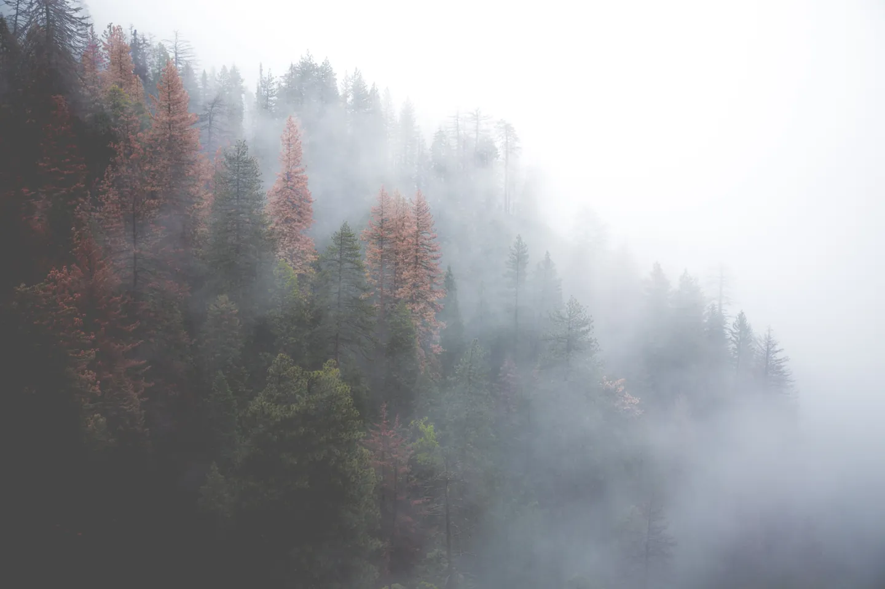
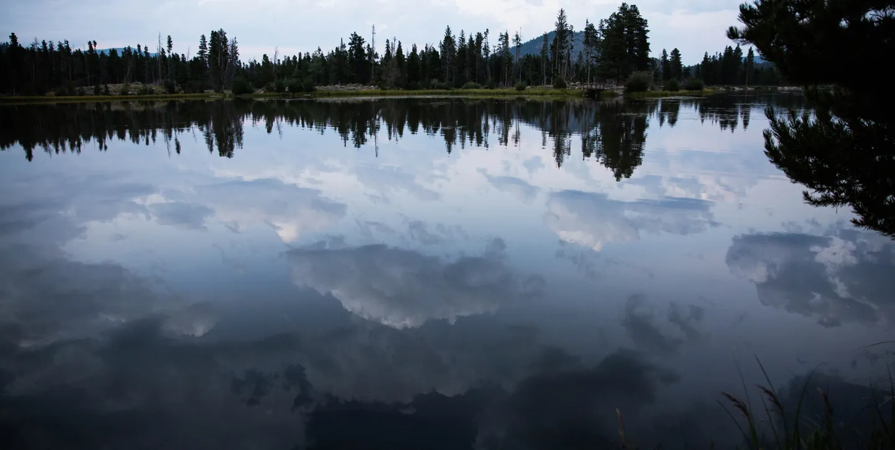

A pause between places.
Forest photograph: Austin Schmid / 2016
LOOK A LITTLE LONGER
There is a different
kind of journey.
Less about arriving. More about noticing the light on the way there. Afterlight is a collection of quiet frames and the thoughts they leave behind.
Photographs from different places, brought together by a shared feeling. No itinerary. No hurry.

SELECTED SCENE / 02
The last light
stays a little.
A still surface holds the sky for a moment longer. The frame is simple; the feeling keeps changing.
Read the scene ↗A NOTE ON PACE
We make room for a frame to breathe.
For a place to remain a place.
For the next story to arrive in its own time.